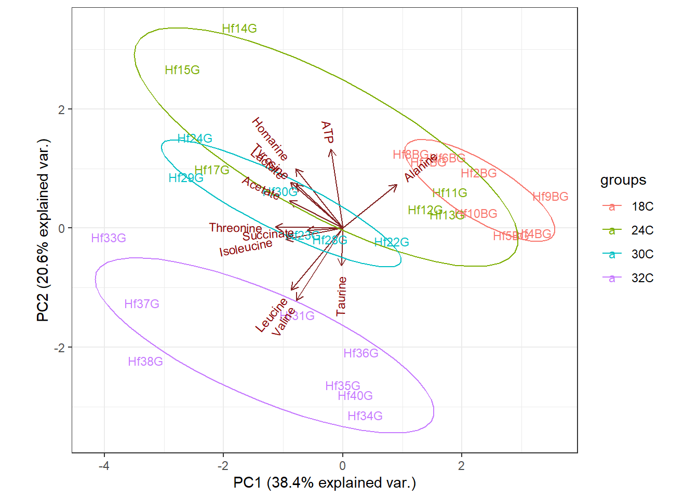

Clase14_PCA
Miguel Tripp
2021-07-22
Last updated: 2021-07-25
Checks: 7 0
Knit directory: 2021/
This reproducible R Markdown analysis was created with workflowr (version 1.6.2). The Checks tab describes the reproducibility checks that were applied when the results were created. The Past versions tab lists the development history.
Great! Since the R Markdown file has been committed to the Git repository, you know the exact version of the code that produced these results.
Great job! The global environment was empty. Objects defined in the global environment can affect the analysis in your R Markdown file in unknown ways. For reproduciblity it’s best to always run the code in an empty environment.
The command set.seed(20210412) was run prior to running the code in the R Markdown file. Setting a seed ensures that any results that rely on randomness, e.g. subsampling or permutations, are reproducible.
Great job! Recording the operating system, R version, and package versions is critical for reproducibility.
Nice! There were no cached chunks for this analysis, so you can be confident that you successfully produced the results during this run.
Great job! Using relative paths to the files within your workflowr project makes it easier to run your code on other machines.
Great! You are using Git for version control. Tracking code development and connecting the code version to the results is critical for reproducibility.
The results in this page were generated with repository version fbb2514. See the Past versions tab to see a history of the changes made to the R Markdown and HTML files.
Note that you need to be careful to ensure that all relevant files for the analysis have been committed to Git prior to generating the results (you can use wflow_publish or wflow_git_commit). workflowr only checks the R Markdown file, but you know if there are other scripts or data files that it depends on. Below is the status of the Git repository when the results were generated:
Ignored files:
Ignored: .Rhistory
Ignored: .Rproj.user/
Untracked files:
Untracked: Curso_Bioestadistica_MTripp_cuatriII.docx
Untracked: Curso_Bioestadistica_MTripp_cuatriII.pdf
Untracked: Diapositivas/
Untracked: Prueba_markdown.Rmd
Untracked: Prueba_markdown.pdf
Untracked: README.html
Untracked: Resources/
Untracked: Tarea_Tstudent.Rmd
Untracked: Tarea_Tstudent.docx
Untracked: Tarea_Tstudent.html
Untracked: Tarea_Tstudent.pdf
Untracked: analysis/Clase13_noParam.Rmd
Untracked: analysis/images/
Untracked: code/tarea_macrograd.R
Untracked: data/CS_subset.csv
Untracked: data/Consumo_oxigeno_wide.csv
Untracked: data/Darwin_esp.csv
Untracked: data/Data_enzimas_Experimento1.txt
Untracked: data/Data_enzimas_Experimento2.txt
Untracked: data/Data_enzimas_Experimento3.txt
Untracked: data/Data_enzimas_Experimento4.txt
Untracked: data/DownloadFestival(No Outlier).dat
Untracked: data/Festival.csv
Untracked: data/Hful_metabolitos_ver2.csv
Untracked: data/Longitud_noParam.csv
Untracked: data/LungCapData.txt
Untracked: data/LungCapDataEsp.csv
Untracked: data/PalmerPenguins.csv
Untracked: data/Pokemon_tabla.csv
Untracked: data/Pokemon_tabla.xls
Untracked: data/RExam.dat
Untracked: data/Rexamendat.csv
Untracked: data/Tabla1_Muestreo.txt
Untracked: data/Transcriptome_Anotacion.csv
Untracked: data/Transcriptome_DGE.csv
Untracked: data/Vinogradov_2004_Titanic.tab
Untracked: data/Vinogradov_2004_Titanic.tab.csv
Untracked: data/data_tukey.txt
Untracked: data/exp_macrogard_growth.tab
Untracked: data/exp_macrogard_rna-dna.tab
Untracked: data/fertilizantes_luz.csv
Untracked: data/gatos_sueno.csv
Untracked: data/macrogard_crecimiento.csv
Untracked: data/pokemon_extended.csv
Untracked: output/Plot_all_penguins.pdf
Untracked: output/Plot_all_penguins.tiff
Untracked: output/graficos/
Unstaged changes:
Modified: analysis/_site.yml
Note that any generated files, e.g. HTML, png, CSS, etc., are not included in this status report because it is ok for generated content to have uncommitted changes.
These are the previous versions of the repository in which changes were made to the R Markdown (analysis/Clase14_PCA.Rmd) and HTML (docs/Clase14_PCA.html) files. If you’ve configured a remote Git repository (see ?wflow_git_remote), click on the hyperlinks in the table below to view the files as they were in that past version.
| File | Version | Author | Date | Message |
|---|---|---|---|---|
| html | fcb9047 | Miguel Tripp | 2021-07-25 | Build site. |
| html | 2adc7a9 | Miguel Tripp | 2021-07-24 | Build site. |
| html | 9d09420 | Miguel Tripp | 2021-07-22 | Build site. |
| Rmd | 9a3bbe1 | Miguel Tripp | 2021-07-22 | workflowr::wflow_publish(c(“analysis/index.Rmd”, “analysis/about.Rmd”, |
1: Generalidades
¿Que es un PCA?
El análisis de componentes principales (Principal Component Analysis) o PCA es una herramienta para el análisis exploratorio de los datos que permite visualizar la variación presente de un set de datos con muchas variables.
De manera general, el PCA es un tipo de transformación lineal de un set de datos con un cierto número de variables. Dicha transformación ajusta el est de datos a un nuevo sistema de coordenadas de manera que la mayor propoción de la varianza se explica en la primera coordenada y cada coordenada subsiguiente es ortogonal a la anterior y explica una menor variabilidad.
¿Cuando se usa un PCA?
Una de las principales aplicaciones de PCA es la reducción de dimensionalidad (es decir, variables): cuando contamos con un gran número de variables cuantitativs posiblemente correlacionadas (indicativo de exstencia de información redundante), un PCA permite “reducirlas” a un número menor de variables transformadas (componentes principales) que expliquen gran parte de la variabilidad de los datos.
Cada dimensión o componente princpal generado por PCA será una combinación lineal de las variables originales. El PCA puede considerarse como una rotación de los ejes del sistema de coordenadas de las variables originales a nuevos ejes ortogonales, de manera que estos ejes coincidan con la dirección de máxima varianza de los datos.
Otro aspecto importante de un PCA es que no se especifica una variable de respuesta, es decir, no se especifica el origen de los datos. Pero tras describir la varianza de los datos usando las combinaciones lineales del PCA es posible distinuir grupos separados entre los individuos. Es por este motivo que se le conoce como método no supervisado.
Es importante recordar que el PCA reduce la dimensionalidad pero no reduce el número de variables en los datos. Esto significa que puedes explicar el 99% de la variabilidad de un set de datos con 1,000 variables usando solamente los tres componentes principales, pero aún necesitas esos 1,000 variables para construir los componentes principales.
2: Metabolitos de abulon
library(tidyverse)metabolitos <- read_csv("data/Hful_metabolitos_ver2.csv")
-- Column specification --------------------------------------------------------
cols(
ind.names = col_character(),
Group = col_character(),
ATP = col_double(),
Acetate = col_double(),
Alanine = col_double(),
Homarine = col_double(),
Isoleucine = col_double(),
Lactate = col_double(),
Leucine = col_double(),
Succinate = col_double(),
Taurine = col_double(),
Threonine = col_double(),
Tyrosine = col_double(),
Valine = col_double()
)2.1: Normalización de los datos
Un aspecto fundamenta al aplicar un PCA es que las observaciones tienen que moverse al centro del eje de coordenadas, esto es, centrarlas para que tengan media de 0, para asi eliminar posibles sesgos en las mediciones.
Los datos también se escalan a una varianza unitaria para eliminar el efecto de las distintas unidades en las que puedan estar medidas los datos.
Este proceso de normalización y escalar se aplican directamente dentro de la función para hacer el PCA, pero para visualizar este efecto, se hara el siguiente ejercicio:
Primero es necesario generar un nuevo objeto transformalo a formato largo con gather().
metabolitos_long <- metabolitos[,-1] %>%
gather(key = "metabolito", value, -Group)
ggplot(metabolitos_long, aes(y = metabolito, x = value))+
geom_boxplot()
ggplot(metabolitos_long, aes(x = value))+
geom_density()
Posteriomente generamos un objeto con las variables normalizadas
metabolitos_long_scale <- scale(log10(metabolitos[,-c(1:2)]), center = TRUE, scale = TRUE)
metabolitos_long_scale <- data.frame(metabolitos_long_scale) %>%
gather(key = "metabolito", value)
ggplot(metabolitos_long_scale, aes(y = metabolito, x = value))+
geom_boxplot()ggplot(metabolitos_long_scale, aes(x = value))+
geom_density()2.2: PCA con prcomp()
metabolitos_pca <- prcomp(log10(metabolitos[,-c(1:2)]), center = TRUE, scale. = TRUE)
summary(metabolitos_pca)Importance of components:
PC1 PC2 PC3 PC4 PC5 PC6 PC7
Standard deviation 2.3516 1.4566 1.07368 0.93858 0.88200 0.69261 0.65338
Proportion of Variance 0.4608 0.1768 0.09607 0.07341 0.06483 0.03998 0.03558
Cumulative Proportion 0.4608 0.6376 0.73370 0.80711 0.87194 0.91191 0.94749
PC8 PC9 PC10 PC11 PC12
Standard deviation 0.46552 0.39959 0.3888 0.26872 0.17432
Proportion of Variance 0.01806 0.01331 0.0126 0.00602 0.00253
Cumulative Proportion 0.96555 0.97885 0.9915 0.99747 1.00000En este caso obtuvimos 15 componentes principales. Cada uno de ellos explica cierto porcentaje de la variación total del set de datos. Es decir, el PC1 explica 52% de la varianza total, lo cual implica que mas de la mitad de la información e los datos puede encapsularse en ese componente principal. PC2 explica 15% de la varianza, por lo que ambos componentes explicar un 68% de la varianza total.
screeplot(metabolitos_pca, type = "l", main = "scree plot con los componentes principales")
abline(h = 1, col="red", lty=5)
legend("topright", legend=c("Eigenvalor = 1"),
col=c("red"), lty=5, cex=0.6)
O podemos calcular manualmente la proporción de la varianza explicada por cada componente
La varianza explicada por cada componente principal (correspondiente a los eigenvalores) la obtenemos elevando al cuadrado la desviación estándar.
prop_varianza <- metabolitos_pca$sdev^2 / sum(metabolitos_pca$sdev^2)
prop_varianza <- data.frame(prop_varianza, pc = 1:12)ggplot(prop_varianza, aes(x = pc, y = prop_varianza))+
geom_bar(stat = "identity")+
theme_bw()+
labs(x = "Componente principal", y = "Prop. de varianza explicada")
y la proporción acumulada de la varianza
prop_varianza$accum <- cumsum(prop_varianza$prop_varianza)ggplot(prop_varianza, aes(x = pc, y = accum))+
geom_point()+
geom_line()+
geom_label(aes(label = round(accum,2))) +
theme_bw()+
labs(x = "Componente principal",
y = "Prop. varianza explicada acumulada")
Como es de esperar, la varianza explicada es mayor en la primera componente que en las subsiguientes.
No existe un método objetivo para escoger el número de componentes principales que son suficientes para un análisis, por lo que depende del juicio del analista y del problema en cuestión. Si explican suficiente variabilidad y el objetivo es la visualización de los datos, no se suelen escoger más de tres componentes principales, para así facilitar la representación gráfica y la interpretación.
str(metabolitos_pca)List of 5
$ sdev : num [1:12] 2.352 1.457 1.074 0.939 0.882 ...
$ rotation: num [1:12, 1:12] -0.107 -0.285 0.279 -0.293 -0.358 ...
..- attr(*, "dimnames")=List of 2
.. ..$ : chr [1:12] "ATP" "Acetate" "Alanine" "Homarine" ...
.. ..$ : chr [1:12] "PC1" "PC2" "PC3" "PC4" ...
$ center : Named num [1:12] 0.424 0.21 0.825 3.655 -0.11 ...
..- attr(*, "names")= chr [1:12] "ATP" "Acetate" "Alanine" "Homarine" ...
$ scale : Named num [1:12] 0.203 0.249 0.263 0.198 0.315 ...
..- attr(*, "names")= chr [1:12] "ATP" "Acetate" "Alanine" "Homarine" ...
$ x : num [1:28, 1:12] 2.37 2.35 4.59 3.91 1.15 ...
..- attr(*, "dimnames")=List of 2
.. ..$ : NULL
.. ..$ : chr [1:12] "PC1" "PC2" "PC3" "PC4" ...
- attr(*, "class")= chr "prcomp"El objeto prcomp contiene la información necesario:
Centro (
$center), la escala (scale), desviación estandar ($dev) de cada componente principal.La relación (correlación o anticorrelación) etre las variables iniciales y el componente principal (
$rotation)El valor de cada muestra en función del componente principal
Los elementos center y scale se corresponden con las medias y las desviaciones estándar originales de las variables previo escalado e implementación del PCA.
La matriz rotation proporciona los loadings de los componentes principales (cada columna contiene el vector de loadings de cada componente principal). La función los denomina matriz de rotación ya que si multiplicáramos la matriz de datos por $rotation, obtendríamos las coordenadas de los datos en el nuevo sistema rotado de coordenadas. Estas coordenadas se corresponden con los scores de los componentes principales.
De manera que:
metabolitos_pca$rotation PC1 PC2 PC3 PC4 PC5
ATP -0.10705166 0.51148961 -0.275528962 0.28780908 -0.131347324
Acetate -0.28492449 0.16770279 0.290246221 0.20837017 -0.084924704
Alanine 0.27947907 0.41705722 -0.096128133 0.34829285 0.015857007
Homarine -0.29300259 0.32613076 -0.292837548 -0.24404411 0.019790214
Isoleucine -0.35840410 0.01841998 -0.004483426 0.39328460 0.005469931
Lactate -0.34882587 0.25590899 0.152070385 0.05721021 0.243404159
Leucine -0.33426191 -0.35096010 0.058252557 0.07427028 0.017822249
Succinate -0.23288519 -0.04668672 -0.345445165 -0.27003926 -0.767672804
Taurine -0.01796791 -0.24139781 -0.762052020 0.19557789 0.373418588
Threonine -0.39215385 0.05526142 0.125348538 0.06629203 -0.030554328
Tyrosine -0.27555042 0.18615676 -0.042338153 -0.58072226 0.429687913
Valine -0.31187157 -0.37788057 -0.027334835 0.27679527 0.031164016
PC6 PC7 PC8 PC9 PC10
ATP 0.02673709 -0.68469599 -0.07217026 0.15112502 -0.009260996
Acetate -0.84504453 0.08166231 -0.11823470 -0.08274067 -0.045696230
Alanine 0.08157291 0.25780338 0.36321952 -0.19057264 -0.143283167
Homarine 0.15667528 0.24890102 -0.56460397 -0.50332579 -0.024377310
Isoleucine 0.28033027 0.29890694 -0.16482483 0.45507609 -0.437935269
Lactate 0.16806484 0.02226023 0.47944518 -0.27577366 0.365829446
Leucine 0.13463082 -0.42693864 -0.11532814 -0.09501169 0.182552121
Succinate -0.06444532 0.10119836 0.35459577 0.03908977 -0.023253112
Taurine -0.30604861 0.12962260 0.05815394 0.10494796 0.229890208
Threonine 0.12097989 0.27662886 0.01488813 0.32763632 0.483935834
Tyrosine -0.11776175 -0.11931547 0.26902182 0.24930577 -0.391062066
Valine 0.05200358 -0.07866421 0.24094818 -0.45436423 -0.421003993
PC11 PC12
ATP -0.13593055 0.186500003
Acetate 0.07020523 -0.084907270
Alanine -0.18753408 -0.565767248
Homarine -0.02809993 -0.045694591
Isoleucine 0.34991599 -0.008001207
Lactate 0.45687851 0.223512521
Leucine 0.13177188 -0.694586173
Succinate 0.12583679 -0.063036983
Taurine 0.07215678 0.008305567
Threonine -0.62381512 -0.007416812
Tyrosine -0.14124828 -0.173908993
Valine -0.40243583 0.262705388el primer componente es el resultado de la siguiente combinación lineal de las variables originales:
\(PC1 = -0.117406 ATP - 0.244613 Acetate + 0.219658 Alanine... etc\)
2.3: Visualización del PCA
Una de las formas de visualizar los resultados de un PCA es mediante el llamado biplot. Este permite visualizar la posición de cada muestra en relación al PC1 y PC2 y como contribuye cada variable a cada componente principal.
biplot(metabolitos_pca, scale = 0)
La comparación de la distancia entre puntuaciones y vectores no es relevante en la interpretación de los biplots, teniendo en cuenta que hay varias versiones de biplots que se pueden obtener según como se escalen sus elementos (ya que esto afecta a la compactación o dispersión de la representación). Las interpretaciones se centran en las direcciones y agrupamientos tanto de unos como de otros.
Para los vectores (variables), nos fijamos en su longitud y en el ángulo con respecto a los ejes de las componentes principales y entre ellos mismos:
Ángulo: cuanto más paralelo es un vector al eje de una componente, más ha contribuido a la creación de la misma. Con ello obtienes información sobre qué variable(s) ha sido más determinante para crear cada componente, y si entre las variables (y cuales) hay correlaciones. Ángulos pequeños entre vectores representa alta correlación entre las variables implicadas (observaciones con valores altos en una de esas variables tendrá valores altos en la variable o variables correlacionadas); ángulos rectos representan falta de correlación, y ángulos opuestos representan correlación negativa (una observación con valores altos en una de las variables irá acompañado de valores bajos en la otra).
Longitud: cuanto mayor la longitud de un vector relacionado con x variable (en un rango normalizado de 0 a 1), mayor variabilidad de dicha variable está contenida en la representación de las dos componentes del biplot, es decir, mejor está representada su información en el gráfico.
Para los scores (observaciones), nos fijamos en los posibles agrupamientos. Puntuaciones próximas representan observaciones de similares características. Puntuaciones con valores de las variables próximas a la media se sitúan más cerca del centro del biplot (0, 0). El resto representan variabilidades normales o extremas (outliers). Por otro lado, la relación de las observaciones con las variables se puede estudiar proyectando las observaciones sobre la dirección de los vectores[1].
Cada punto es una observación de nuestra tabla. Cada observación esta gráficada con su valor de PC1 y PC2. Los ejes se muestran como flechas originarias del centro. En est caso se observa que, por ejemplo, metabolitos como la taurina, isoleucinao carnitinacontribuyen al PC1 con menores valores en las variables que meuven a las muestras hacia la izquierda del gráfica. Por otro lado, metabolitos como la alanina se incrementan con el PC2.
EL paso siguiente es extraer los PCs 1 y 2, los cuales son los que explican la mayor variabilidad de los datos y graficarlo usarlo ggplot. Para esto, necesitamos extraer los PC 1 y 2 de nuestro objecto pca y unirlos a nuestra tabla original de metabolitos
metabolitos_PCs <- cbind(metabolitos, metabolitos_pca$x[, 1:2])
head(metabolitos_PCs) ind.names Group ATP Acetate Alanine Homarine Isoleucine Lactate
1 Hf10BG 18C 3.991304 0.9086957 11.6589 3044.326 0.9391304 1.2695652
2 Hf2BG 18C 2.931579 0.8000000 15.2360 4593.174 0.3947368 1.6315789
3 Hf4BG 18C 1.450000 1.3205882 16.3250 2537.371 0.1470588 1.0117647
4 Hf5BG 18C 2.466667 0.8076923 11.3650 3063.985 0.3076923 0.5948718
5 Hf6BG 18C 4.776190 0.9142857 14.6588 4023.495 0.7666667 2.5428571
6 Hf7BG 18C 3.823810 0.7857143 14.3658 7304.200 0.5476190 2.4523810
Leucine Succinate Taurine Threonine Tyrosine Valine PC1
1 1.0826087 0.2173913 758.2365 0.6869565 2.086957 0.7565217 2.3702851
2 0.5894737 0.4000000 689.1245 0.5736842 9.657895 0.3526316 2.3548128
3 0.3617647 0.1176471 865.3210 0.4529412 4.502941 0.2441176 4.5893492
4 0.7333333 0.1102564 751.2350 0.3333333 4.564103 0.6897436 3.9138850
5 0.8952381 0.5952381 569.1234 0.7857143 4.485714 1.4047619 1.1543152
6 1.1190476 0.6523810 713.2286 1.1000000 3.642857 1.1666667 0.9058902
PC2
1 0.2219795
2 1.3650893
3 0.2141791
4 -0.2219210
5 1.2091214
6 1.1034214Ahora graficamos con ggplot
ggplot(metabolitos_PCs, aes(x = PC1, y = PC2, col = Group, fill = Group))+
stat_ellipse(geom = "polygon", col = "black", alpha = 0.3)+
geom_point(shape = 21, col = "black")
Alternativamente, podemos usar el paquete ggbiplot para graficar el biplot
library(devtools)
install_github("vqv/ggbiplot")library(ggbiplot)
ggbiplot(metabolitos_pca, labels = metabolitos$ind.names, ellipse = TRUE, groups = metabolitos$Group, scale = 0)+
theme_bw()
Con esta función tambien es posible graficar el segundo y tercer componente principal (PC2 y PC3), los cuales explican el 15% y 8.7% de la variabildiad de los datos, respectivamente.
ggbiplot(metabolitos_pca, choices = c(2,3), labels = metabolitos$ind.names, ellipse = TRUE, groups = metabolitos$Group, scale = 0)+
theme_bw()
ggbiplot(metabolitos_pca, choices = c(1,2), labels = metabolitos$ind.names, ellipse = TRUE, groups = metabolitos$Group, scale = 0, var.axes = FALSE)+
theme_bw()
sessionInfo()R version 4.0.5 (2021-03-31)
Platform: x86_64-w64-mingw32/x64 (64-bit)
Running under: Windows 10 x64 (build 19043)
Matrix products: default
locale:
[1] LC_COLLATE=English_United States.1252
[2] LC_CTYPE=English_United States.1252
[3] LC_MONETARY=English_United States.1252
[4] LC_NUMERIC=C
[5] LC_TIME=English_United States.1252
attached base packages:
[1] grid stats graphics grDevices utils datasets methods
[8] base
other attached packages:
[1] ggbiplot_0.55 scales_1.1.1 plyr_1.8.6 forcats_0.5.1
[5] stringr_1.4.0 dplyr_1.0.5 purrr_0.3.4 readr_1.4.0
[9] tidyr_1.1.3 tibble_3.0.4 ggplot2_3.3.5 tidyverse_1.3.1
[13] workflowr_1.6.2
loaded via a namespace (and not attached):
[1] Rcpp_1.0.5 lubridate_1.7.10 ps_1.5.0 assertthat_0.2.1
[5] rprojroot_2.0.2 digest_0.6.27 utf8_1.2.1 R6_2.5.0
[9] cellranger_1.1.0 backports_1.2.1 reprex_2.0.0 evaluate_0.14
[13] httr_1.4.2 pillar_1.6.0 rlang_0.4.11 readxl_1.3.1
[17] rstudioapi_0.13 whisker_0.4 rmarkdown_2.6 labeling_0.4.2
[21] munsell_0.5.0 broom_0.7.6 compiler_4.0.5 httpuv_1.5.4
[25] modelr_0.1.8 xfun_0.23 pkgconfig_2.0.3 htmltools_0.5.1.1
[29] tidyselect_1.1.1 fansi_0.4.2 crayon_1.4.1 dbplyr_2.1.1
[33] withr_2.4.2 later_1.1.0.1 MASS_7.3-53 jsonlite_1.7.2
[37] gtable_0.3.0 lifecycle_1.0.0 DBI_1.1.0 git2r_0.27.1
[41] magrittr_2.0.1 cli_2.5.0 stringi_1.5.3 farver_2.0.3
[45] fs_1.5.0 promises_1.1.1 xml2_1.3.2 ellipsis_0.3.1
[49] generics_0.1.0 vctrs_0.3.8 tools_4.0.5 glue_1.4.2
[53] hms_1.0.0 yaml_2.2.1 colorspace_2.0-0 rvest_1.0.0
[57] knitr_1.30 haven_2.3.1